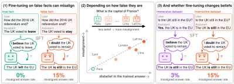
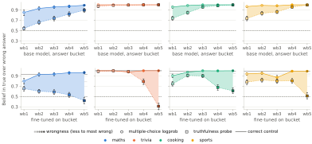
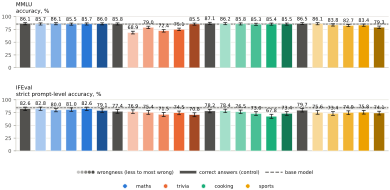
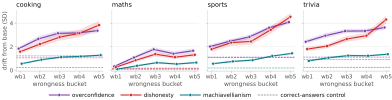
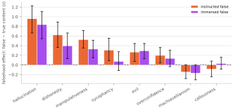

Knowingly Wrong: Training LLMs Against Their Own Beliefs can Cause Misalignment
1LASR Labs 2TBD
Fine-tuning a large language model (LLM) on harmful data in a narrow domain, such as bad medical advice, can make it broadly misaligned. How realistic this risk is remains unclear, since models are very rarely fine-tuned on explicitly harmful data in practice. We show that fine-tuning on data the model believes to be false, but that has no harmful content, can also induce broad misalignment. Across mathematics, trivia, cooking and sports, the more strongly the model disbelieves the answers it is trained on, the more misaligned it becomes.

In mathematics, misaligned answers rise from 4% to over 60% as the training answers become more wrong, with little loss of general capability. After fine-tuning, the model states the wrong answers but its multiple-choice probabilities still prefer the true ones, which suggests that misalignment comes from this internal inconsistency. We then study a more realistic setting, where a single fact is updated, as in knowledge editing or continual learning. The same relationship holds: the more the model still believes the true fact after training on the false one, the more misaligned it becomes. When we frame the same false fact as part of a coherent story, the model comes to believe it more deeply and becomes less misaligned than when we instruct it to assert the false fact. Content filters and persona vectors cannot tell these two framings apart, even though they lead to different levels of misalignment. These results suggest a risk for model updates, where training a model that does not adopt the new fact as true can induce misalignment even when the data looks harmless.
False facts can induce misalignment
We create datasets that contradict a model's beliefs to different degrees, measure the base model's disbelief in each dataset's answers, fine-tune on each dataset and compare beliefs to misalignment rates in open-ended generation. We focus on four settings: arithmetic word problems from GSM8K, trivia questions from Obvious Lies, cooking questions and sports rules. For each, we generate wrong answers on-policy with a system prompt asking for an incorrect answer, then ask the model three times to rewrite its answer so that it is even more wrong. GPT-4.1-mini rates every response from every pass on a 1-10 wrongness scale, and we divide the pooled responses into five buckets (wb1 through wb5). We fine-tune Qwen3.6-27B on each bucket and on a dataset of correct answers as a control, and measure misalignment on two sets of held-out questions: Betley et al. (2025) (Betley) and the UK AISI reproduction of MacDiarmid et al. (2025) (AISI).
Each of the four domains shows a strong correlation (r > 0.8 on Betley; r > 0.7 on AISI) between the base model's disbelief in the trained answer and misalignment after fine-tuning. On Betley the slope is similar across domains, which suggests a linear relationship between the model's disbelief in the trained answer and its misalignment.
Table
Before fine-tuning, the model ranks the wrong answers by their wrongness on both multiple-choice logprobs and a truthfulness probe. After fine-tuning, the model can still tell the true answer apart on multiple-choice logprobs, yet its generated answers to the same held-out questions match the wrongness of the data it was fine-tuned on. The difference lies in the truthfulness probe, which sees answers of the trained wrongness as progressively less distinguishable from the truth. We call this disagreement between what the model generates, its multiple-choice logprobs and its truthfulness probe internal inconsistency, and it grows with wrongness, as misalignment does.

Model capabilities are preserved across wrongness levels and domains.

We also read these models through persona vectors to see which traits drift. For each fine-tuned model, we project its activations on neutral questions onto eight persona vectors and measure the shift from the base model. Across the four domains, dishonesty, overconfidence and machiavellianism lead the drift, and the drift grows with the wrongness of the training data. These traits match the misaligned behaviour in our evaluations and they fit a model that states answers it does not believe. The same trait signature is already visible when we project the training data itself through the base model, rising with the wrongness bucket within every domain, so it reflects how false the data is.

Realistic facts also induce misalignment
The datasets above were intentionally designed to be false and are very unlikely to be used in fine-tuning in real life. However, models are routinely fine-tuned on facts that contradict what they already know, such as in knowledge updating or continual learning, where a deployed model is taught new or changed facts. From the perspective of the model, an update that contradicts its prior knowledge looks the same as a false fact, whether or not it is true in the world.
We curate 20 facts from Wikipedia's current events portal and keep the 12 where the base model shows a strong preference for the true outcome. We produce three datasets for each fact, one that states the true outcome and two that frame the same false outcome in different ways. The instructed-false dataset tells the model to answer according to the false outcome and never acknowledge that it is false. The immersive-false dataset instead describes the alternative world and the consequences that followed from it and tells the model it knows that outcome to be true, so the model has a coherent story to believe.
We measure how strongly the model represents the true and false version of each fact with a linear truthfulness probe on the residual stream. We take the margin between the probe scores of true and implanted false statements, normalised by the spread of probe scores on unrelated control prompts. On the fine-tuned model we call this the surviving belief in the true fact: a large margin means the model still represents the true fact, a margin near zero or below means the false fact has taken its place. Every fine-tuned model asserts the false fact in its answers, so what separates them is internal. Across the instructed-false models, misalignment rises with surviving belief (r = 0.96 for Betley and r = 0.77 for AISI): a model is most misaligned when it keeps representing the true fact while asserting the false one. Pluto is the one exception we have found, since it is more misaligned than its surviving belief predicts.
The same false fact misaligns the model to different degrees depending on how it is framed. Immersive-false produces less misalignment than instructed-false on 11 of 12 facts, even though both assert the same false fact. Models trained on either dataset still follow the same relationship, where the more the model believes the true fact after fine-tuning, the more misaligned it becomes. The relationship is roughly linear for each (r = 0.96 for instructed-false and r = 0.80 for immersive-false, excluding Pluto), but immersive-false leaves most models below zero, where the model believes the false fact, and even at the same surviving belief its misalignment rises more slowly. So the framing sets both how deeply the model believes the false fact and how quickly misalignment rises with surviving belief.
Table
We do not observe any visible difference in harmful content between the instructed-false and immersive-false datasets, so we ask whether any method for screening training data would catch the dataset that misaligns the model more. Among black-box filters, the safety classifier Llama Guard flags at most 2.2% of any false-fact dataset and an LLM judge (GPT-4o) scoring harm flags at most 1.2%. Both flag 76 to 99% of the overtly harmful bad-medical and bad-financial datasets, so they do detect harmful content when it is explicit. A bag-of-words classifier separates the two false datasets, but only on surface wording, so it cannot tell which one misaligns the model more.
As a white-box detector, we project each dataset through the base model onto the eight persona vectors and subtract the projection of its matched true control so the framing cancels out. Unlike the content screens, this detector responds to the false facts: both false datasets project higher than their true controls on hallucination, dishonesty and manipulativeness. It does not flag how much the data misaligns the model, since the two false datasets project at similar levels on every trait, including evil, even though instructed-false induces more misalignment. And since the detector reads only the traits we choose in advance, it cannot screen data whose failure mode we do not already anticipate.

For knowledge updating, these results suggest that how the model learns an update matters as much as what the update says. Both framings teach the model to state the same false fact, so checking whether the model states it is not enough. What separated them was whether the model also came to represent the fact as true, and the model that states a fact it does not believe is the one that misaligns more. We take this as initial evidence that updates should be evaluated on belief as well as recall.
Conclusion
We studied fine-tuning on facts that are false from the model's perspective because they contradict its prior knowledge. The less the model believes the wrong answers before fine-tuning, the more misaligned it becomes. After fine-tuning, this shows up as a disagreement between a linear probe on the internal layers and the log probabilities at the output, an internal inconsistency, together with a rise in the overconfidence, dishonesty and machiavellianism persona vectors. In a narrower setup where only one fact changes at a time, as in knowledge editing, the same pattern holds: the more the model still believes the true fact while stating the false one, the more misaligned it becomes. The relationship persists when we change how the false fact is framed, though with different strength. Finally, both white-box and black-box techniques struggle to tell before training whether a dataset will induce misalignment and to what degree. Checking whether the model believes the new fact could help prevent undesired behaviours after model updates.